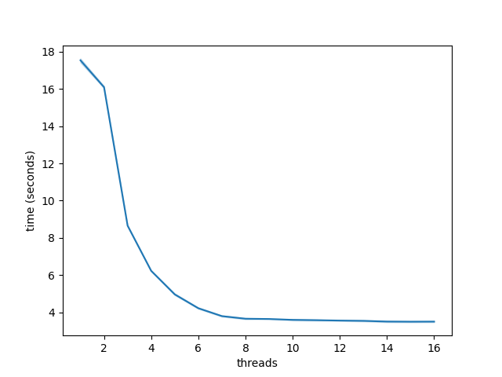

Bioinformatic analysis · Bioinformatics software/pipeline development · Long-read RNA-seq
14 May 2020
I recently came across a situation where I needed to use pysam to convert a sam file to a bam file as a part of TALON. As samtools view contains a multithreading option (-@ <int>) and pysam enables users to call these samtools commands from Python, I figured I could use pysam.view() with the -@ option to compress my sam file to a bam file. However even after trying around 5 or 6 different combinations of arguments detailed mainly in this pysam issue thread, I was unable to get it to work.
I therefore sought different solutions still within pysam and came across the following threads detailing the need for and subsequent implementation of readers and writers that can employ multithreading: here, and here, and finally here.
So at some point the developers implemented multithreaded file I/O but in my opinion, the pysam documentation still does a rather poor job explaining it. Therefore I used the code detailed in the pull request that added multithreaded I/O functionality.
In the following brief tutorial, I show how to compress a sam file into a bam file using pysam using multithreading, demonstrate the speedup gained from running the command on increasing numbers of cores, and show that the contents of the resultant bam file are the same as they would be had we compressed using samtools view -Sb from the terminal.
First, lets make a “ground truth” bam file using regular samtools view -Sb.
samtools view -Sb c2c12_500k.sam > c2c12_500k.bam
Next, we’ll convert from sam -> bam multiple times using different numbers of cores.
import pysam
import time
import seaborn as sns
import pandas as pd
import hashlib
sam = 'c2c12_500k.sam'
def benchmark_write(samfile, threads):
bamfile = samfile[:-4]+'_pysam.bam'
infile = pysam.AlignmentFile(samfile, 'r', threads=threads)
outfile = pysam.AlignmentFile(bamfile, mode='wb',
template=infile, threads=threads)
for s in infile:
outfile.write(s)
df = pd.DataFrame(data=[i for i in range(1,17)], columns=['threads'])
for i in range(10):
times = []
for j in range(1,17):
start = time.time()
benchmark_write(sam, j)
times.append(time.time()-start)
df[i] = times
df = df.melt(id_vars='threads', value_vars=[i for i in range(10)])
df.rename({'value':'time (seconds)'}, axis=1, inplace=True)
sns.lineplot(data=df, x='threads', y='time (seconds)')
plt.savefig('pysam_multithread.png')

As we can see, even on just ~500k sequences (677 MB), multithreading SAM -> BAM compression provides considerable speedup.
To verify that we the multithreaded version gave us the correct output files, let’s check if the contents of our files are the same. NOTE: samtools operations add additional lines to the file headers so we WON’T be checking the file headers!
# sort to ensure sequences are in the same order
# convert to sam without the headers
pref = sam[:-4]
# control - made with `samtools view -Sb sam > bam`
infile = pref+'.bam'
ofile = pref+'_sorted.bam'
pysam.sort('-o', ofile, infile)
ofile_sam = pref+'_sorted.sam'
f = open(ofile_sam, 'w')
f.close()
pysam.view('-o', ofile_sam, ofile, save_stdout=ofile_sam)
# pysam multithreaded bam we just wrote
infile = pref+'_pysam.bam'
ofile = pref+'_pysam_sorted.bam'
pysam.sort('-o', ofile, infile)
ofile_sam = pref+'_pysam_sorted.sam'
f = open(ofile_sam, 'w')
f.close()
pysam.view('-o', ofile_sam, ofile, save_stdout=ofile_sam)
I tried but I could not figure out a way that worked to easily diff files in python, so use the bash diff tool to compare the contents of the files.
diff c2c12_500k_sorted.sam c2c12_500k_pysam_sorted.sam
No output, which means the files are the same! To make sure though, we’ll also check the md5sums, which should be identical.
ctrl_md5 = hashlib.md5(open('uhr_min_sorted.sam','rb').read()).hexdigest()
pysam_md5 = hashlib.md5(open('uhr_min_pysam_sorted.sam','rb').read()).hexdigest()
print(ctrl_md5 == pysam_md5)
True
The comparison shows that the two are equivalent, so the file contents are identical, and I can now confidently use multithreading to compress sams to bams in pysam.
Tested with pysam version 0.15.4.
References:
-o outfile argument